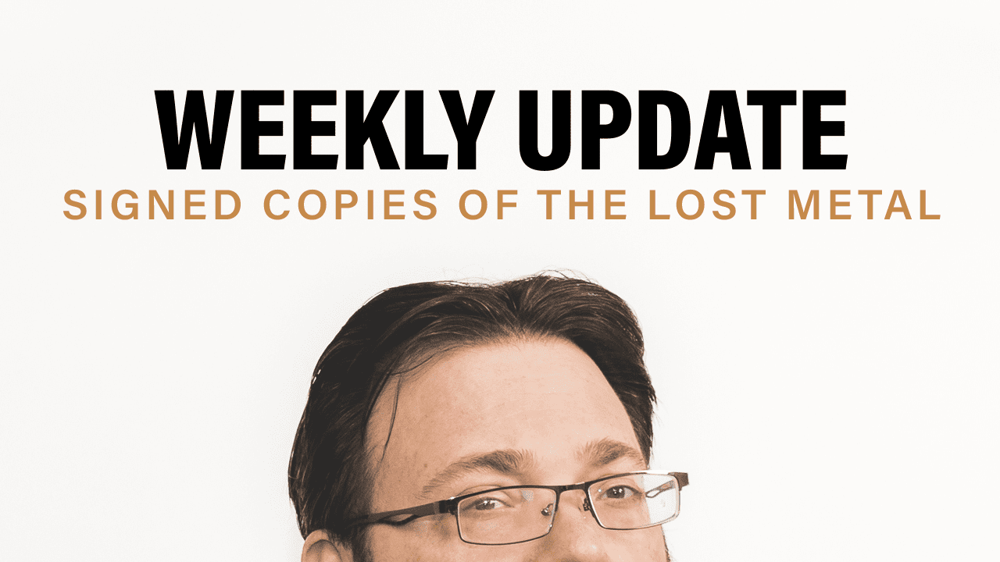

Halloween Stream Tonight + Weekly Update Brandon here with your Weekly Update. Secret Project 4 final draft, Bing! is done. I actually finished that mid-last week a few days ahead of schedule. So I’m feeling pretty good about that one. That means that all of the secret projects are now a wrap. I have done…
Read more
CHARITY MAGIC DRAFT IS LIVE + WEEKLY UPDATE
October 24, 2022
Charity Magic Draft is Live + Weekly Update Hi. I am here with your Weekly Update again. So first things first, I am working on Secret Project 4, where I am, Bing! 70% of the way done. This might seem a small amount, since last week I was 50%, and I should have been a…
Read more

SIGNED COPIES OF THE LOST METAL + WEEKLY UPDATE
October 17, 2022
Signed Copies Of The Lost Metal + Weekly Update Hello! Welcome to the Weekly Update. I am back from New York Comic Con. We will have some videos of the panels that I did there coming up on the YouTube channel at some point. There was a really fun one I did with Diana Gabaldon…
Read more
STORMLIGHT PREMIUM FIGURINES KICKSTARTER CAMPAIGN WITH BROTHERWISE GAMES
September 13, 2022
Stormlight Premium Figurines Kickstarter Campaign with Brotherwise Games Introduction Today, we launch a new Kickstarter campaign—for Stormlight minis and painted figurines. This affords me a chance to talk about a few things relating to the behind the scenes of how this Kickstarter came about, why we’ve partnered with Brotherwise for it, and how I want…
Read more
STORMLIGHT FIVE UPDATE ONE
September 6, 2022
Stormlight Five Update One Hello, all! I know some of you may have been waiting for this. It’s time for the first in a series of updates about your book! I wanted to wait until I’d made good progress this month before I stopped to write one of these updates, and I do apologize for leaving you in…
Read more
MOONBREAKER ANNOUNCEMENT + WEEKLY UPDATE
August 29, 2022
Moonbreaker Announcement + Weekly Update Hey, guys. Brandon here with your Weekly Update. First off, Stormlight. We are moving up, bing! 2% to 14% this week. I’ve had a very good week on Stormlight 5. I have one more week to work on Stormlight before I’m required to do some other revisions. It’s going really…
Read more
FREE “SHADOWS OF SELF” EBOOK! + WEEKLY UPDATE
August 22, 2022
Free “Shadows of Self” eBook! + Weekly Update Hey! Brandon here with your Weekly Update! Number one, Stormlight 5, is going pretty well. I’m going to conservatively move the percentage up to, Bing! 12%. It probably will end the week a little higher than that but that feels about right to me now. Writing is…
Read more
PROLOGUE TO STORMLIGHT 5
March 31, 2022
Prologue to Stormlight 5 Introduction Hey, all! We wanted to send one final excerpt to you to both say thank you, and give a warning that the Kickstarter is coming to an end. Today is the last day, and it ends at 5:00 MDT. I’m so grateful to you all for the overwhelming show of…
Read more
FIRST LOOK AT SECRET PROJECT FOUR (HINT: IT’S STORMLIGHT ADJACENT)
March 24, 2022
First Look at Secret Project Four (Hint: it’s Stormlight Adjacent) Introduction Hello everyone! Welcome to the next Secret Project reveal! If you have no idea what I’m talking about here, I recommend you start here. For full info about our Kickstarter, you should visit the campaign page. If you missed my reveal for the first…
Read more
FIRST LOOK AT SECRET PROJECT #3
March 17, 2022
First Look at Secret Project #3 Introduction Hello everyone! Welcome to the next Secret Project reveal! If you have no idea what I’m talking about here, I recommend you start here. For full info about our Kickstarter, you should visit the campaign page. If you missed my reveal for the first two Secret Projects, you…
Read more